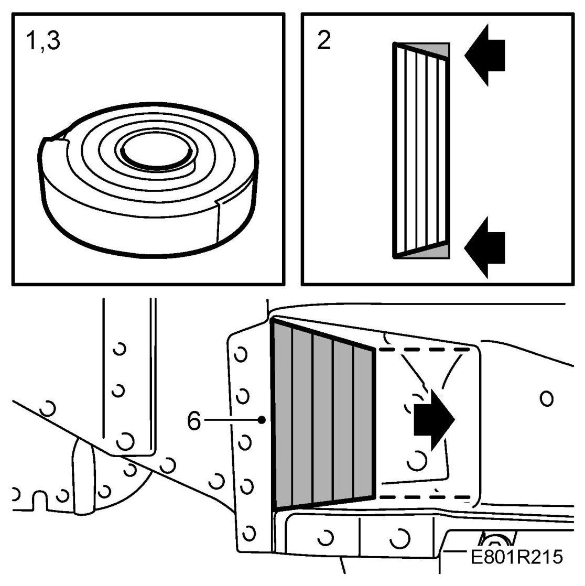

Sound Insulation - 2
Sound Insulation
This general description applies to cavities that are to be soundproofed. Use foam sealing tape, part no. (16) 82 93 367, where the original sound insulation has been removed.
It can take several weeks after its application for the foam tape to expand fully. This means that it may take a couple of weeks before the sound insulation is satisfactory.
1. Remove the storage tape from the reel.

2. Cut out a suitable piece of foam sound insulation tape. The foam tape will expand to 3 to 4 times its original size.
NOTE: Make sure that you cut the piece to a suitable size. Study the space and visualise the expansion of the foam tape. Do not make the piece too big (if it is too big, it cannot expand fully).
3. Reseal the reel of tape with the storage tape or strap.
NOTE: Tighten the tape or strap well to prevent the foam tape from expanding during storage.
4. Clean the surface to which the foam tape is to be adhered. Affix the foam tape to the largest smoothest surface in the cavity.
5. Remove the backing from the adhesive side of the foam tape.
6. Affix the adhesive side of the foam tape to the largest surface in the cavity.